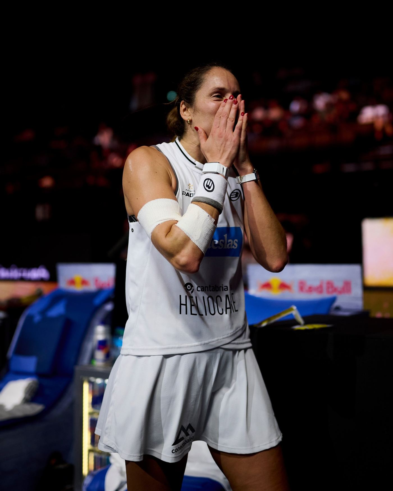
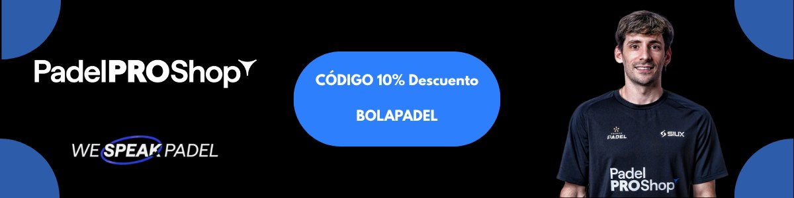
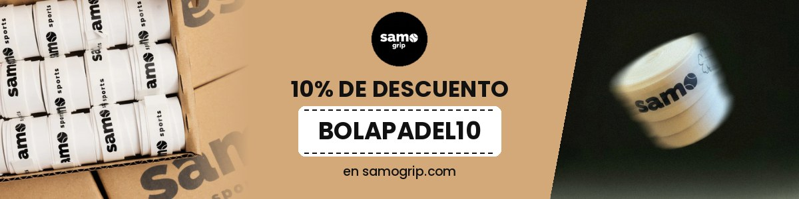

News · Gemma Triay
Gemma Triay is now the player with the most titles in padel history
The Kuwait Major takes her to 59. Three players arrived level on 58: Ale Salazar, Ari Sánchez and her. The final, against Ari, decided who would stand alone.
By Luis González · · 2 min read

59.
Gemma Triay now stands alone.
Yesterday she won the Kuwait Major with Delfi Brea. It's her 59th title. No female player has won more.
The count covers the three major circuits: Padel Pro Tour, World Padel Tour and Premier Padel.
Until yesterday, the record was shared by three.
Three players on 58
On 6 September, in Madrid, Triay won her 58th title. That put her level with Ale Salazar, her partner from 2021 to 2023.
By then she was already the first female player with more than 200 wins in Premier Padel.
It looked like a matter of days. It wasn't.
Paris, Rotterdam, Düsseldorf and Milan. Four tournaments. Four semifinal defeats. Three of them against Ari Sánchez and Andrea Ustero.
Ari, meanwhile, kept winning. Paris, Rotterdam and Milan. She went from 55 to 58.
That's how they got to Kuwait. Salazar, Triay and Ari. All three on 58. All three in the draw.
The semifinal that nearly took it away
Salazar, who is saying goodbye to the tour this year, lost her first match.
Triay came close to the same fate. In the semifinals, against Claudia Fernández and Martina Calvo, the pair that had knocked her out in Paris.
6-4, 2-6, 7-6. Three hours and six minutes. The third set went to a tie-break.
The record final
And in the final, Ari. The other player on 58.
Whoever won would stand alone at the top.
Ari and Andrea took the first set 6-3. After that, Triay and Brea dropped just two games. 6-1, 6-1.
Title number 59. Her seventh of the year with Brea.
It doesn't end here
Triay is 34. Ari is 29, and one behind. Salazar retires at the end of the season.
The World Cup starts tomorrow in Doha. Triay plays for Spain. Brea, for Argentina.
Yesterday they lifted the trophy together. This week, they'll be on opposite sides.
— Luis González
Advertisement

Advertisement
